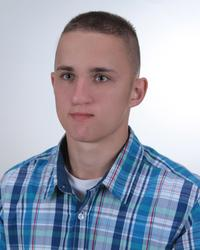

Strona domowa entuzjasty programowania i nowych technologii
Początek dnia był
Kilka słów o mnie
 Hej! Mam na imię Karol i biorę udział w szkoleniu Maćka Korsana WTF: Co ten frontend. Poniżej przedstawiam kilka informacji o sobie. Pracuję na stanowisku automatyka w zakładzie drobiarskim Wipasz S.A. w Międzyrzecu Podlaskim. Miałem wiele planów na miejsce, w którym chciałbym pracować, jak na przykład Państwowa Straż Pożarna, Gaz System, PGNiG, Warszawskie korpo, Emitel, Pronar, Polfer. Jednak życie inaczej się potoczyło. Z perspektywy czasu cieszę się, że tak wyszło ponieważ wiele rzeczy sobie w głowie ułożyłem. Teraz wiem, że chcę spróbować..nie, CHCĘ PRACOWAĆ jako programista w IT i dołożę wszelkich starań, aby tak się stało. Szkolenie Maćka Korsana WTF: Co ten frontend spadło mi jak manna z nieba. Po trzech tygodniach tygodniach, wiem że pieniądze zapłacone za kurs nie pójdą na marne, bo wiele się nauczę. Gdy już nauczę się odpowiednio dużo, zrobię kilka pożądnych projektów zabiorę się za szukanie pierwszej pracy w IT. Będzie to wiązało się z ponowną przeprowadzką do stolicy, ale w tej chwilii nie przeraża mnie to, a nawet cieszy :). Wszędzie są ludzie parapety, a znajomi sprawiają, że życie jest duuużo fajniejsze. Muszę ostatecznie w każdej kwestii się uniezależnić. Bardzo bym również się uradował, gdyby udałoby mi się nawiązać bliższą więź przykładowo z Wiktorią D. lub inną koleżanką.
Szkoła i studia
Jestem z pokolenia, które miało przyjemność uczęszczać zarówno do szkoły podstawowej, jak i gimnazjum. Ukończyłem liceum ogólnokształcące w Łosiach w klasie o profilu matematyczno-informatycznym z wynikiem bardzo dobrym. Posiadam również wykształcenie wyższe, a mianowicie jestem absolwentem I i II stopnia Wydziału Mechatroniki Politechniki Warszawskiej. Ukończyłem kierunek Mechatronika ze specjalizacją Elektroniczne Systemy Pomiarowe.
Praca
W swoim z niejednego pieca chleb jadłem. Pierwszym wykonywanym zajęciem była pomoc na gospodarstwie rolnym domowym. Następnie pracowałem na fermie drobiu, za co miałem już realne pieniądze. Międzyczasie zacząłem jeździć również na pożary z jednostką Ochotnicza Straż Pożarna w Rudce. Miałem również epizody pracy na budowie i wykończeniówce. Praktyki podczas studiów odbywałem w Terenowej Jednostce Eksploatacyjnej i Laboratorium Wzorcowania Gazomierzy w spółce Operator Gazociągów Przesyłowych GAZ-SYSTEM S.A. W ostatnie dwa lata studiów pracowałem w hurtowni produktów bio: Ecomania. Po studiach zacząłem pracę w Ponar sp. z o. o., jako automatyk-elektryk na montażu maszyn komunalnych. Jednak ze względu na brak rozwoju, stagnację i brak przenosin na stanowisko inżynierskie po 4 miesiącach zmieniłem pracodawcę na Wipasz S.A., gdzie zostałem zatrudniony w roli specjalisty automatyka. Pracuję tam do dnia dzisiejszego.
Kursy i szkolenia
- Kwalifikowany Kurs Pierwszej Pomocy
- Stowarzyszenie Elektryków Polskich, kurs w grupie I (elektrycznej) w kategorii Eksploatacyjnej
- Minikurs podstawowy o falownikach
Pasje, hobby i zainteresowania
Jestem osobą, która ma wiele zainteresowań. Głównym zainteresowaniem poza pracą jest piłka nożna oraz siłownia. Jeśli nadarzy się sposobność chętnie rozegram mecz ze znajomymi lub skorzystam z dobrodziejstwa "mordowni". Oczywiście moimi pasjami są również: programowanie, elektronika, automatyka i metrologia.
Plany na przyszłość
W przyszłości planuję przejść do branży IT, a tym samym polepszyć swoje waruni pracy. Postanowiłem między innymi przestudiować poniższe kursy, szkolenia i książki
- Kurs podstawowy o falownikach
- Kurs praktyczny o falownikach
- Kurs o sterownikach Siemens s7-1200
- Kurs SeeElectrical
- Kurs EasyE4
- Kurs programowanie robotów Mitsubishi
- Kurs regulacji PID
- Kurs Eplan
- Kurs inne sterowniki plc, m.in. Omron, Allan Bradley - Rockwell Automation, Wago, Astor (mp. sterownik plc Astrada, oprogramowanie CodeSys)
- Kurs serwonapędy
- Kurs pneumatyka - festo, smc
- Kurs hydraulika
- WTF: Co ten frontend
- Pasja informatyki - kurs strukturalne programowanie w C++
- Pasja informatyki - kurs obiektowe programowanie w C++
- Pasja informatyki - sieci komputerowe
- Pasja informatyki - kurs java
- Pasja informatyki - inne kursy
- Akademia kodu - kurs java
- Akademia informatyki - kurs java
- Kurs Gita - Maciej Aniserowicz
- Kurs bazy danych
- Kurs DNA droga nowoczesnego architekta w przyszłości
- Kurs języka angielskiego
- Kursy Excela - VBA, Makra, Tabele przestawne - iExcel.pl
- inne kursy do zrobienia
- Sterowanie napędów elektrycznych - książka
- Maszyny elektryczne - dwie książki
- Pasja informatyki - książki - angielski, czysty kod, java, inne
- https://altenberg.pl/ książki do języka angielskiego